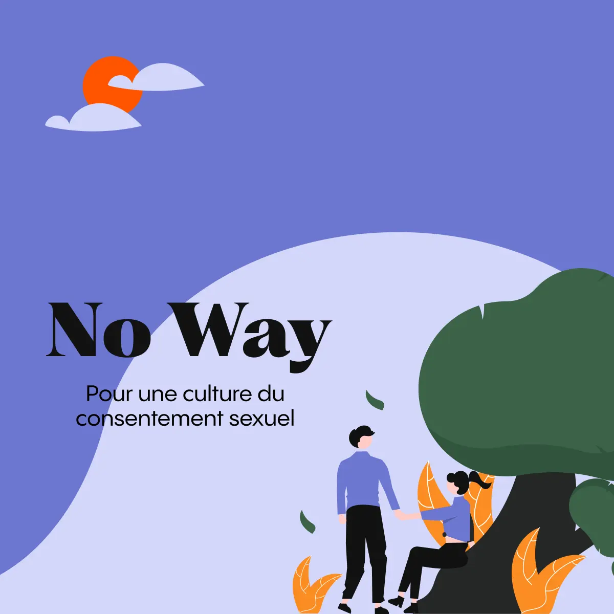
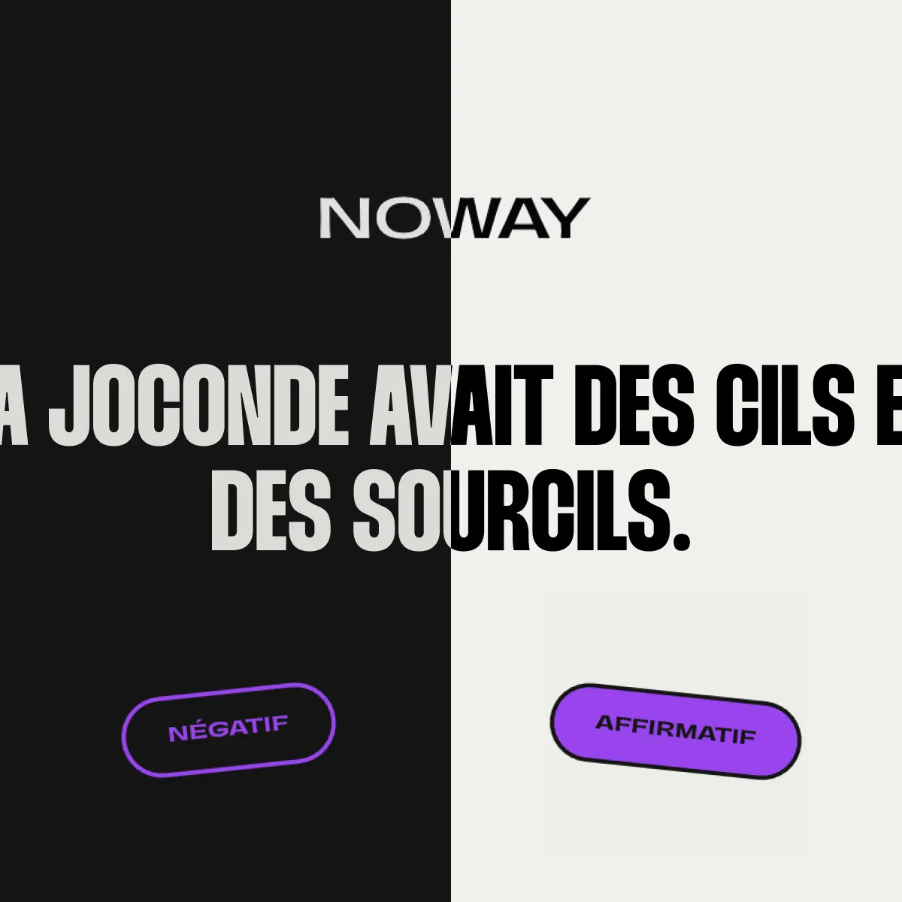
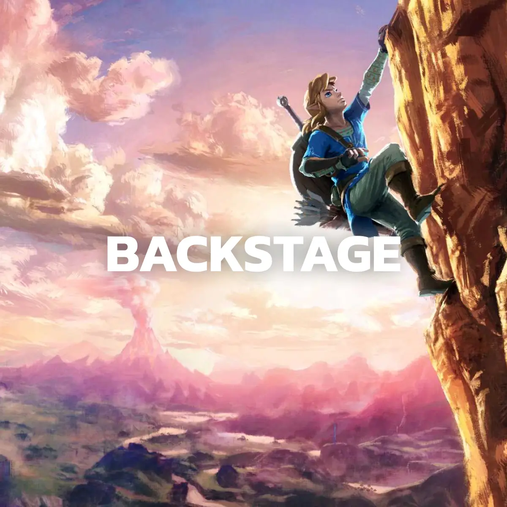
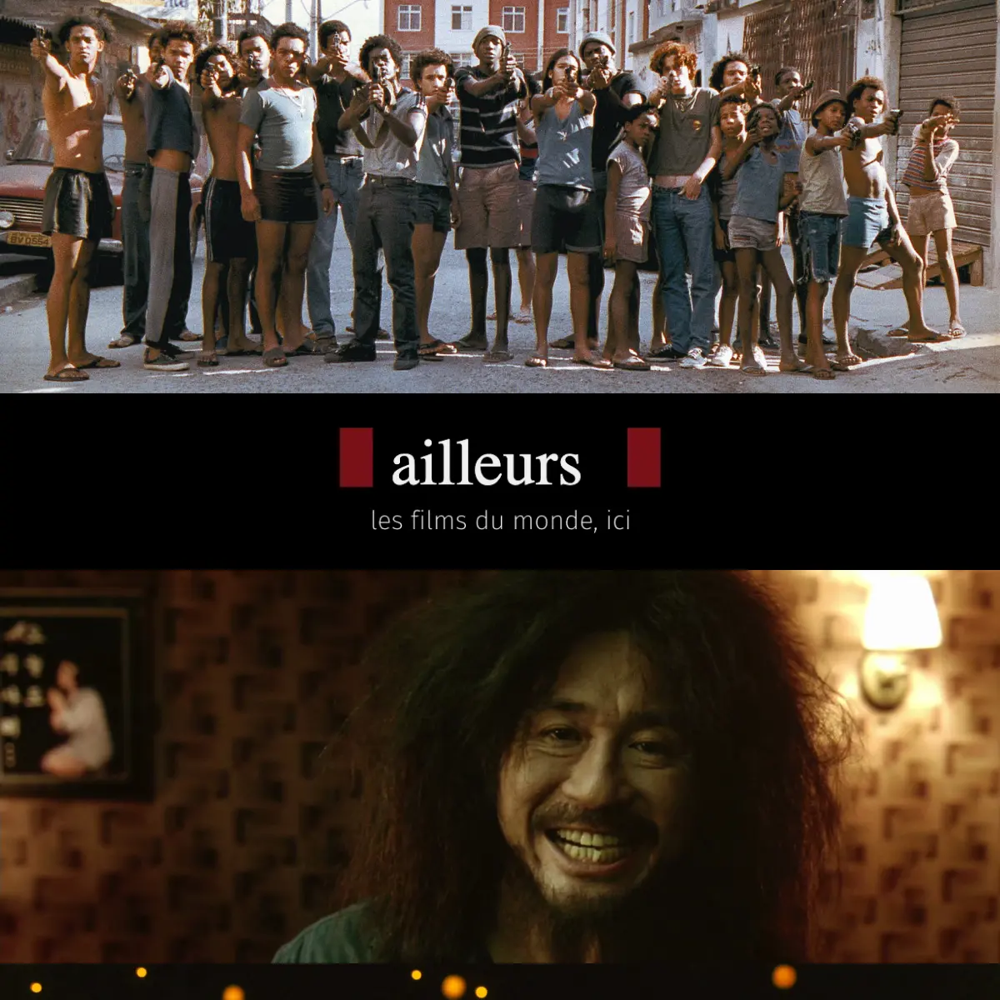
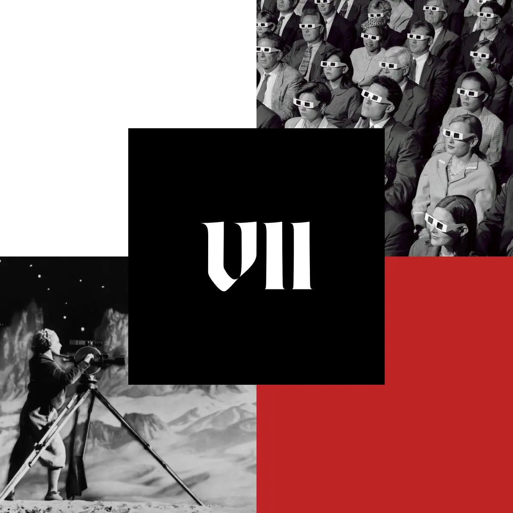

Projets de semestre  No Way 2023 Daphné Staruch UI design | UX | Coding  No Way 2023 Sirena Chong UI design | UX | Coding  Backstage 2022 Guillaume Sauteur UI design | UX | Coding  Ailleurs 2021 Ali Ulukütük UI design | UX | Coding  Seven 2020 Chloé Schorderet UI design | UX | Coding